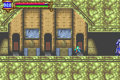

|
Glitch
Glitch หมายถึง ความบกพร่องของเครื่องมือ หรือแผนที่
ในที่นี้ คือ Bug ของเกมนั่นเอง
* Note : ก่อนเริ่มทำการ Glitch แนะนำว่าควรเซฟเกมให้เรียบร้อยเสียก่อน
เพราะเครื่องอาจมีอาการค้าง หรือหยุดไปเสียเฉยๆ ได้
Fast go to Chaotic Realm
สิ่งจำเป็นในการทำ Glitch คือ โซล ที่สามารถแปลงร่างได้
เช่น Curly หรือ Devil หรือ Manticore
จากนั้นให้ไปดังสถานที่ดังภาพ ใน Zone : Floating Garden
(ขึ้นไปยืนบนสุด หันหน้าไปทางขวามือ)
(ต้องเป็นห้องซ้ายสุดเท่านั้น)
(แปลงร่าง !!!)
(ขึ้นไปยืนด้านบนแล้ว !!!)
(กดเดินไปทางด้านซ้ายค้างไว้)
(มาโผล่ตรงนี้แล้ว ???)
* Note : สามารถไปยัง Chaotic Realm ได้ตั้งแต่เริ่มแรก
แต่การเดินทางใน Chaotic Realm จำเป็นต้องมีโซลที่จำเป็น 2 อย่าง คือ
Malphas เพื่อให้ Double Jumps ได้ และ
Skula เพื่อให้ดำน้ำได้
Map 100.1%
ไม่ใช่เรื่องโกหก สามารถทำได้
โดยจำเป็นต้องเริ่มเล่นใหม่โดยใช้ Save เดิมเท่านั้น
สิ่งจำเป็นเหมือนเดิมก็คือ โซล ที่สามารถแปลงร่างได้
จากนั้นให้ไปยังสถานที่ดังภาพ
(หันหน้าไปทางด้านขวา)
(อยู่ตรงนี้)
(แปลงร่าง)
(อยู่บนหลังคาแล้ว)
(เดินลงมาด้านล่าง)
(กระโดด กดปุ่ม "ซ้าย" ค้างไว้)
(โผล่ตรงนี้แล้ว)

(โผล่อีกทีตรงนี้)
(เปิดแผนที่ดู o_O")
Map 100.2%
โอ้โห... มาอีกแล้วครับ
วิธีทำ ต้องทำต่อจาก Map 100.1%
จากนั้นให้เดินลงด้านล่างไปปราบ Boss :
Great Armor
จะได้โซล Malphas ทำให้กระโดดได้ 2 ครั้ง (Double Jump)
และกลับขึ้นไปด้านบน สู้กับ Boss : Headhunter
เพื่อไปเก็บโซล Undine ทำให้ลอยตัวบนน้ำได้
* Note : สำคัญมาก ห้ามเฉไฉ เถลไถลเดินไปเข้า Zone นอกเหนือจากที่บอกเด็ดขาด
่จากนั้นไป Zone : Floating Garden
ไปยืนบริเวณดังรูป
(ต้องเป็นห้องนี้เท่านั้น)
(หันหน้าไปด้านขวาแล้วแปลงร่าง)
(จะเด้งขึ้นไปด้านบน)
(เดินไปทางด้านขวา)
(ยืนหน้าเสาที่สอง นับจากด้านขวา)
(กระโดดขึ้นไปตรงๆ )
 (โผล่ที่นี่)
(โผล่ที่นี่)
(และเด้งมาโผล่ที่นี่)
(เปิดแผนที่ดู o_O")
Map 100.3%, 100.4%, 102.2%, 102.3%
นอกจากวิธีทำ Map 100.2% จากที่บอกในเว็บแล้ว
ยังสามารถทำได้มากถึง 102.3% เลยทีเดียว
ผู้ค้นพบวิธีทำคือ DarkSpenser
มีปัญหาสามารถสอบถามได้ที่ darkspenser@hotmail.com
หรือใครจะนำ url ของ DarkSpenser ไปเผยแพร่ รบกวนให้ Credit ด้วยนะครับ
Map
100.3%
Map
100.4%
Map
102.2%
Map
102.3%
และสามารถติดตามรายละเอียดต่างๆ ได้ที่ spenz.no.ip.com
ส่วนวิธีทำพร้อมรูป สามารถดูได้จาก http://217.215.87.40/
หรือ www.aria-of-sorrow.tk
Map 100.3%
Map 100.4%
Map 102.2%

ภาพนี้จาก http://217.215.87.40/
Special Thanks For DarkSpenser, http://217.215.87.40/
|